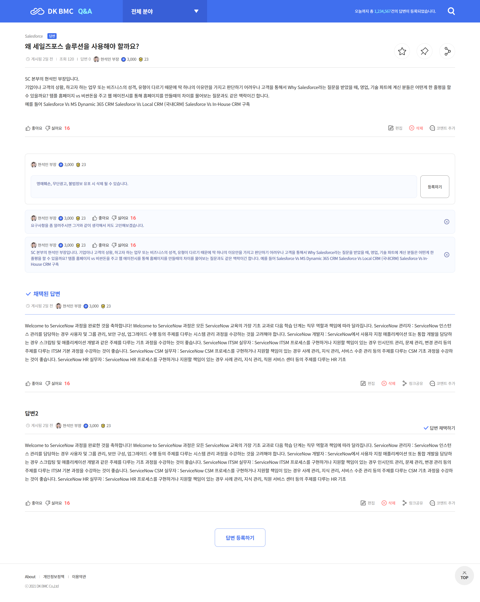
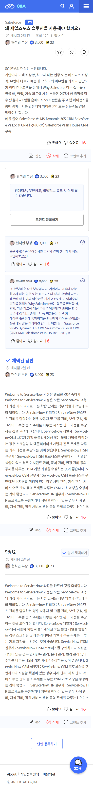

QnA 사이트
- 디케이비엠씨 사내 QnA 사이트
- pc / 모바일 적응형
- HTML / SCSS / jQuery
- 기여도 100%
- jQuery
- login / main / 검색 (검색 된 질문/결과 없을 시) / 나의Q&A / 본문 댓글등록 / 프로필 (프로필 수정) - 9페이지 작업
-
메인


-
본문 댓글등록


이곳은 업무 중 생기는 다양한 궁금증을 자유롭게 묻고, 함께 해결해 나가는 공간입니다.
직무별 정보 공유, 기술적 문제 해결, 회사 프로세스에 대한 질문 등
누구나 언제든 질문을 올리고 답변을 남길 수 있습니다.
주요 기능
- 태그 기반 검색 기능으로 필요한 정보 쉽게 찾기
- 공유용한 QnA는 즐겨찾기 저장 가능
- 답변 채택 기능으로 정확한 정보 우선 정리
기대 효과
- 반복되는 질문 감소
- 사내 지식 축적 및 공유 활성화
- 신규 입사자 큰 도움